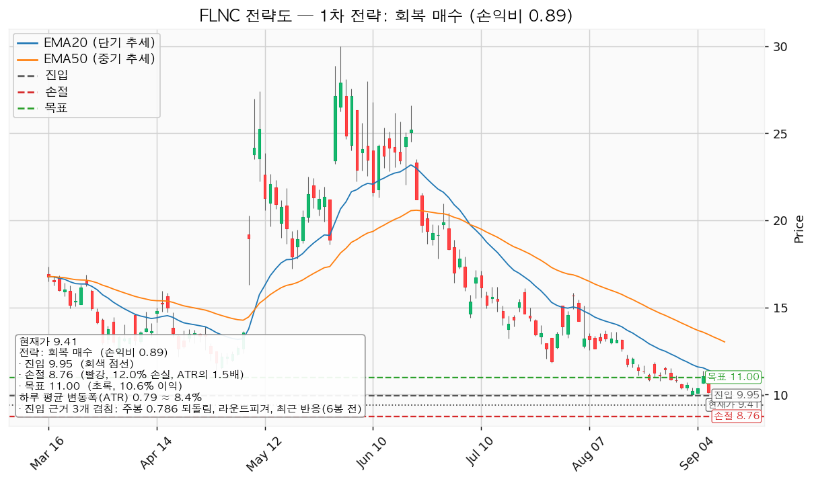
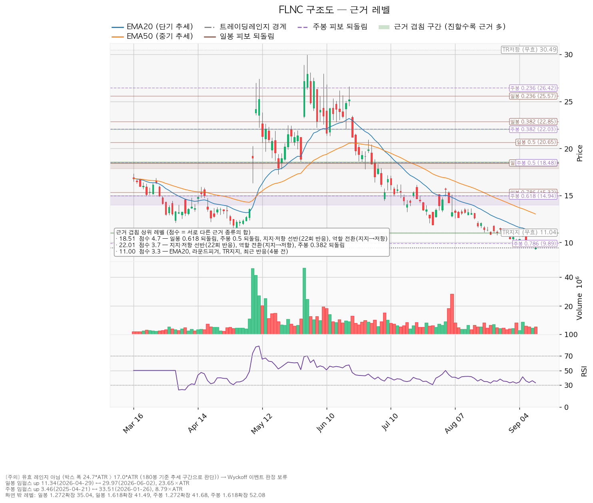
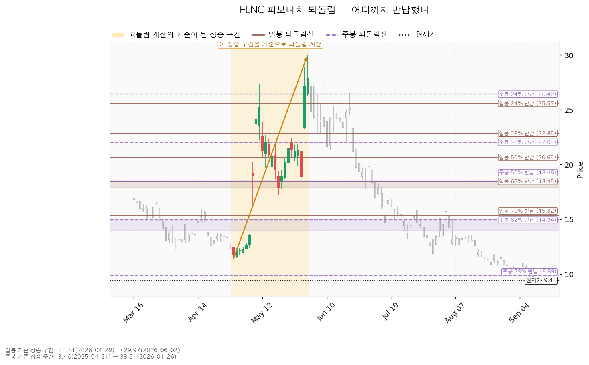
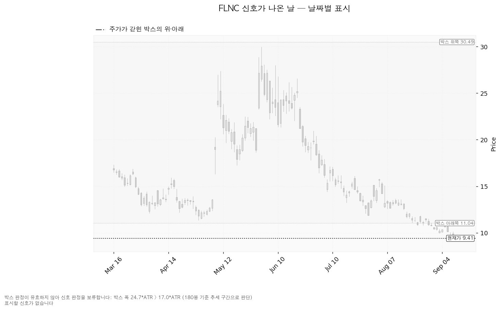

플루언스 에너지(FLNC)는 전력망·발전소에 들어가는 대형 배터리 에너지저장장치(ESS)와 이를 운영·입찰하는 소프트웨어, 유지보수 서비스를 공급하는 미국 기업입니다. AES와 지멘스가 함께 세웠습니다.
기준 가격은 9월 14일 종가 9.41달러, 하루 평균 변동폭(ATR)은 0.79달러입니다. 보유분은 7월 1일 체결된 270주이고 평단은 27.4219달러입니다.
| 구분 | 가격 | 판정 방식 | 현재가 대비 | 상태 |
|---|---|---|---|---|
| 회복선(구조 회복) | 13.13달러 | 일봉 종가로 회복한 뒤 되돌림에서 지지되는지 | +39.5% (하루 평균 변동폭의 4.72배) | 회복 대기 |
| 집행 손절 | 8.76달러 | 도달 시 즉시 청산 — 보유 270주가 있으므로 이번에는 실제로 작동합니다 | -6.9% (0.83배) | 작동 중 |
| 관망 종료 기준 | 9.16달러 | 일봉 종가가 아래로 마감 / 또는 2026-11-24 실적 | -2.7% (0.32배) | 유지 중 |
| 확인선 | 18.51달러 | 일봉 종가 돌파 후 되돌림에서 지지 확인 | +96.7% (11.55배) | 미돌파 |
| 폐기선(구조) | 9.95달러 | 이탈 후 3거래일 내 종가 회복 실패(또는 그 전에 9.16달러 아래 종가 마감) + 반등에서 저항으로 확인 | +5.7% (0.69배, 현재가 위) | 이탈 상태 — 오늘이 3거래일째 |
회복선 13.13달러는 구조가 되살아났다고 볼 수 있는 자리이고, 이번 셋업이 걸린 가격은 그보다 낮은 9.95달러입니다. 두 가격이 다른 이유는 셋업이 "구조 회복"이 아니라 "직전에 반응한 저항선 하나를 종가로 되찾는 것"만 조건으로 걸기 때문입니다.
확인선 18.51달러는 현재가에서 하루 평균 변동폭의 11.55배 위에 있어 실행 기준이 아니라 상승 전환이 완성됐다고 인정할 먼 지점으로만 씁니다. 박스 상단 30.49달러는 그보다 더 위의 맥락입니다.
① 직전 트리거의 성적표 — 넷 다 미충족이고, 폐기선 회복은 2센트 차이로 실패했습니다.
| 직전 리포트가 건 조건 | 판정 | 근거 |
|---|---|---|
| 회복선 13.27달러 일봉 종가 회복 | 미충족 | 이 기간 최고 종가는 9월 11일 9.93달러 |
| 폐기선 9.95달러 3거래일 내 종가 회복 | 진행 중 — 2일차까지 실패 | 9월 11일 종가 9.93달러(고가 10.155달러로 장중에는 넘었으나 종가가 아래), 9월 14일 종가 9.41달러. 3거래일째는 오늘 9월 15일입니다 |
| 관망 종료 9.13달러 일봉 종가 이탈 | 미충족 | 9월 14일 저가 9.24달러로 근접했으나 종가는 9.41달러 |
| 집행 손절 8.71달러 | 미도달 | 이 기간 최저가 9.24달러 |
| 확인선 18.63달러 종가 돌파 | 미충족 | 미도달 |
가격은 9.69달러에서 9.41달러로 -2.9% 움직였습니다. 매일 도는 보유종목 점검은 9월 14일 종가가 폐기선 9.95달러 아래에서 마감한 것을 잡아 "보유분 정리"로 표시했습니다. 리포트의 3단계 판정은 그보다 엄격해서 아직 ① 관찰 단계이며, 두 판정이 갈리는 지점이 오늘 종가입니다.
② 좌표의 이동 — 대부분 하루 평균 변동폭과 이동평균이 내려간 만큼만 움직였습니다.
| 항목 | 직전(09-11) | 이번(09-15) | 왜 움직였나 |
|---|---|---|---|
| 회복선 | 13.27달러 | 13.13달러 | 같은 근거(EMA50 + 스윙저점 + 과거 반응)인데 EMA50이 13.31 → 13.02달러로 내려왔습니다 |
| 폐기선 | 9.95달러 | 9.95달러 | 같습니다. 주봉 0.786 되돌림(9.89달러) + 라운드피겨 10.00달러 + 6거래일 전 반응 |
| 관망 종료 기준 | 9.13달러 | 9.16달러 | 폐기선에서 하루 평균 변동폭 1배 아래라는 계산은 같고, 변동폭이 0.82 → 0.79달러로 줄었습니다 |
| 집행 손절 | 8.71달러 | 8.76달러 | 같은 이유로 진입선 아래 1.5배 폭이 좁아졌습니다 |
| 확인선 | 18.63달러 | 18.51달러 | 반복 반응 구간 집계가 23회 → 22회로 바뀌며 구간 상단이 18.79 → 18.56달러로 좁아졌습니다 |
| 대표 셋업 진입 / 목표 | 9.95 / 11.09달러 | 9.95 / 11.00달러 | 목표 겹침대가 11.00~11.24 → 10.95~11.04달러로 내려왔습니다(EMA20 11.24 → 10.95달러) |
| 손익비 | 1:0.93 | 1:0.89 | 진입은 그대로인데 목표가 0.09달러 내려왔습니다 |
| ATR / RSI | 0.82달러 / 33.4 | 0.79달러 / 33.1 | 큰 변화 없습니다 |
③ 판단이 바뀌었습니다 — 그리고 직전 리포트의 전제를 정정합니다.
9월 8일·9월 11일 리포트는 모두 "진입한 포지션이 없으니 집행 손절은 작동하지 않는다"고 적었습니다. 그 전제가 틀렸습니다. 체결 장부에 9월 14일 등록된 기록에 따르면 7월 1일 체결분 270주를 평단 27.4219달러에 보유 중입니다. 기록이 장부에 올라온 것이 9월 14일이었을 뿐 보유 자체는 두 리포트보다 앞섭니다. 장부에 기록이 없다는 것은 "보유가 없다"는 답이 아닌데, 직전 두 리포트는 그것을 보유 없음으로 읽었습니다.
이 정정으로 리포트가 답해야 할 질문이 바뀝니다. 직전까지는 "지금 살 것인가"였고 답은 패스였습니다. 이번에는 "들고 있는 270주를 어떻게 할 것인가"가 더해집니다.
| 항목 | 값 |
|---|---|
| 보유 수량 / 평단 | 270주 / 27.4219달러 (2026-07-01 체결, 실현손익 없음) |
| 취득가 합계 | 7,404달러 |
| 현재 평가액 | 2,541달러 |
| 평가손익 | -4,863달러 (-65.7%) |
신규 진입에 대한 답은 직전과 같은 패스입니다. 손익비가 0.93에서 0.89로 더 내려왔고 1을 넘지 못합니다.
| 항목 | 값 |
|---|---|
| 현재가 | 9.41달러 (2026-09-14 종가) |
| EMA20 / EMA50(20일·50일 지수이동평균) | 10.95달러 / 13.02달러 — 둘 다 현재가 위 |
| RSI(14) (14일 상대강도, 50이 중립) | 33.1 — 약세이나 과매도선(30) 위 |
| ATR(Average True Range, 하루 평균 변동폭) | 0.79달러 (주가의 8.37%) |
| 국면 | 하락·중립 — 신규 롱 관망 |
| 횡보 박스 | 유효한 박스가 아닙니다 |
횡보 박스로 볼 수 없어 Wyckoff 판정은 보류합니다. 40·90·180거래일 세 창을 모두 시험했지만 어느 것도 박스 조건을 채우지 못했습니다. 그중 그나마 가격이 잘 지킨 180거래일 창(약 9개월치)이 선택됐고, 조회한 전체 일봉은 751개입니다.
| 시험한 창 | 가격이 안에 머문 비율 | 방향성 | 폭(하루 변동폭 배수) | 판정 |
|---|---|---|---|---|
| 40거래일 | 37.5% | 1.513 | 2.97배 | 박스 아님 |
| 90거래일 | 81.1% | 0.614 | 21.57배 | 박스 아님 |
| 180거래일 | 90.6% | 0.328 | 24.68배 | 박스 아님 |
180거래일 창은 가격이 90.6% 안에 머물렀지만 폭이 하루 변동폭의 24.68배로 지나치게 넓습니다(기준은 17배). 폭이 이만큼 벌어지면 옆으로 누운 박스가 아니라 아래로 흐른 추세 구간으로 읽습니다. 40거래일 창은 반대로 가격이 구간 안에 머문 비율이 37.5%밖에 안 되고 방향성 지표가 1.513으로 커서, 짧은 창에서도 옆걸음이 아니라 한 방향으로 흐른 구간입니다. 그래서 이번 리포트에는 매집·분산을 가르는 Wyckoff 국면 판정이 없고, 회복선·확인선도 박스 경계가 아니라 참고용 구조선입니다. 국면 후보는 하락 진행이며 이동평균 배열만 반영한 값입니다.
이 구간으로 아래에서 올라왔습니다. 직전 구간은 3.93~24.79달러의 추세·확장 구간이었고 위로 뚫고 올라온 뒤 지금 자리로 되밀렸습니다. 위에서 내려온 것이 아니라 아래에서 올라와 되돌린 모양이므로 재축적일 수도 분산일 수도 있으며, 판단 근거는 안쪽에서 일어난 일입니다.
안쪽 관측치 — 중립이며, 매집이라 부를 근거가 없습니다.
| 지지 테스트 | 저가 | 그날 거래량(평소 대비) |
|---|---|---|
| 2026-03-03 | 13.81달러 | 1.18배 |
| 2026-04-02 | 12.12달러 | 1.02배 |
| 2026-04-29 | 11.34달러 | 1.08배 |
| 2026-07-17 | 13.23달러 | 0.98배 |
| 2026-07-29 | 11.84달러 | 0.86배 |
| 2026-09-14 | 9.24달러 | 0.97배 |
지지 테스트 거래량은 줄지도 늘지도 않는 혼조이고, 저점은 절상이 아니라 절하입니다(13.23 → 11.84 → 9.24달러). 상승봉과 하락봉의 거래량비는 1.10으로 미세하게 매수 쪽이지만 저점 절하를 상쇄할 숫자가 아닙니다. 종합 판정은 중립이며, 그 사유는 레인지 내 저점 절하입니다. 9월 10일 저가 9.64달러가 9월 14일 9.24달러로 다시 낮아져, 직전 리포트에서 적은 절하 흐름이 한 단 더 이어졌습니다.
이번 분석에서 산출된 셋업은 회복 확인 매수 한 개이며, 손익비가 1에 미치지 못해 보류로 분류됩니다. 국면이 하락·중립이라 되돌림 매수·돌파 매수는 나오지 않았고, 지지 확인 매수도 나오지 않았습니다 — 유효한 박스가 없고 안쪽 판정이 매집 우위가 아닌 중립이며, 현재가 바로 아래에 여러 번 지켜진 지지 가격대도 없기 때문입니다. 셋업이 하나뿐이라 대표 셋업 선택의 트레이드오프는 없습니다.
대표 셋업 선정 사유: *"손익비 0.89 × 구조 증명도(회복 확인형) × 근거 겹침 2.6점으로 선정. 저항을 종가로 회복한 뒤에만 진입한다 — 진입가는 불리하나 구조가 먼저 증명된다."*
| 항목 | 값 |
|---|---|
| 셋업 | 회복 확인 매수 — 회복 확인형(구조 증명도 1.0, 가장 높은 등급) |
| 엣지의 종류 | 모멘텀 — "저항을 종가로 되찾으면 그 방향이 이어진다"는 전제 |
| 성격 | 자주 틀리고 소수가 크게 맞는 유형입니다. 승률을 기대하는 셋업이 아닙니다(이 유형의 일반적 성격이며, 이 엔진에서 측정한 값이 아닙니다) |
| 진입 | 9.95달러 — 일봉 종가로 회복한 뒤 |
| 진입 근거 겹침 | 2.6점 / 9.89~10.00달러 — 근거 3종: 주봉 0.786 되돌림, 라운드피겨(10.00달러처럼 딱 떨어지는 가격), 6거래일 전 실제 반응 |
| 손절 | 8.76달러 — 손절 폭 1.19달러 = 하루 평균 변동폭의 1.50배(진입가 대비 -11.96%) |
| 손절 근거 | 진입 기준선에서 하루 평균 변동폭의 1.5배 아래. 진입가 아래에 근거가 겹치는 구간이 없어 겹침 구간 하단이 아니라 변동폭 기준으로 잡았습니다 |
| 목표 | 11.00달러 (진입 대비 +10.6%) |
| 목표 근거 겹침 | 3.3점 / 10.95~11.04달러 — EMA20, 라운드피겨, 구간 지지, 4거래일 전 반응 |
| 손익비 | 1:0.89 (손절 폭이 하루 평균 변동폭의 1.50배) — 1 미만이므로 패스 |
| 구조적 손절 기준 손익비 | 이 손절이 이미 구조적 손절(1.5배 변동폭)이므로 같은 1:0.89입니다 |
| 청산 규칙 | 목표 11.00달러에서 전량. 트레일링은 걸지 않습니다 |
| 비중 | 계좌의 8.4%(1회 매매 손실 한도 1% 기준, 한 종목 상한 13% 이내) — 손익비가 1 미만이라 배정하지 않습니다 |
진입 9.95달러에서 목표 11.00달러까지 1.05달러인데 손절까지는 1.19달러입니다. 맞았을 때 버는 것보다 틀렸을 때 잃는 것이 더 큽니다. 손절 폭이 이미 하루 평균 변동폭의 1.5배라 더 조여 숫자를 만들 여지도 없어 패스입니다.
분할 청산으로 바꿔도 결론은 같습니다. 엔진의 분할안은 1차 목표 10.50달러에서 50% 익절(손익비 1:0.47) → 잔여분 손절을 진입가 9.95달러(본전)로 상향 → 2차 목표 11.00달러에서 나머지 50%(손익비 1:0.89)이며, 전 구간 손익비는 1:0.68, 절반 익절 후 본전 손절에 걸리는 최악의 경우는 1:0.23입니다. 어느 계산도 1을 넘지 못합니다.
진입에서 목표까지가 하루 평균 변동폭의 1.33배로 2배에 못 미치므로 트레일링이나 다단 청산을 권하지 않습니다(2배라는 기준은 관행이지 정설이 아닙니다). 11.00달러 위로 확정되는 구간은 이 포지션의 연장이 아니라 새 셋업으로 다시 잡습니다.
진입 기준선 9.95달러가 현재가보다 위에 있는 회복 확인형이므로, 이번 리포트에는 현재가를 따라 사는 선택지 자체가 없습니다.

위 셋업은 새로 사는 경우의 계획이고, 보유분은 별도로 처리합니다. 엔진이 낸 무효화 3단계를 그대로 쓰되, ③ 폐기 확정을 기다리지 않고 ② 경고가 확정되는 시점에 정리합니다. 두 가지 때문입니다 — 평단 대비 -65.7%라 한 단 더 밀릴 때의 금액이 크고, 현재가 아래에는 근거가 겹치는 지지 구간이 하나도 없어 ③까지 가는 동안 가격이 반응할 자리가 사이에 없습니다.
| 조건 | 시점 | 집행 | 그때 평가손익 |
|---|---|---|---|
| 오늘 종가가 9.95달러 미만 | 2026-09-15 종가 | 270주 전량 정리 | 현재가 9.41달러 기준 -4,863달러 |
| 일봉 종가가 9.16달러 아래 마감 | ①보다 먼저 올 수 있음 | 270주 전량 정리 | 9.16달러에서 -4,931달러 |
| 장중 8.76달러 도달 | 위 두 판정 전 급락 시 | 즉시 청산 | 8.76달러에서 -5,039달러 |
| 오늘 종가가 9.95달러 이상 | 2026-09-15 종가 | 보유 유지, 목표 11.00달러에서 전량 정리 | 11.00달러에서 -4,434달러 |
어느 경로든 평단 27.4219달러는 회복되지 않습니다. 평단은 지금 가격이 어디로 갈지에 아무 영향을 주지 않으므로, 판단은 현재가 9.41달러에서 위아래로 무엇이 있는지만 보고 내렸습니다.
| 단계 | 조건 | 의미 | 행동 |
|---|---|---|---|
| ① 관찰 | 일봉 종가가 9.95달러 아래로 마감 | 구조 이탈이 시작된 것이며, 되돌아 올라오면 속임수 하락일 수 있어 아직 무효가 아닙니다 | 신규 진입만 중단. 집행 손절은 그대로 둡니다 |
| ② 경고 | 이탈 후 3거래일 안에 9.95달러를 종가로 회복하지 못함, 또는 그 전에 일봉 종가가 9.16달러 아래로 마감(하루 평균 변동폭의 1배만큼 더 밀림) — 둘 중 먼저 오는 쪽 | 저항 회복 실패 가능성이 우세해집니다 | 이번 리포트는 이 시점에 보유 270주를 전량 정리합니다 |
| ③ 무효 | 반등이 9.95달러에서 막히고 그 아래로 되밀림(지지가 저항으로 전환) | 셋업 폐기 — 구조 해석이 틀린 것으로 확정 | 새 구조가 만들어질 때까지 관망 |
현재 위치는 ① 관찰이며, 오늘이 3거래일째입니다. 9월 10일 종가 9.69달러로 ①에 들어섰고, 9월 11일 9.93달러·9월 14일 9.41달러로 두 번 모두 9.95달러를 종가로 되찾지 못했습니다. 9.16달러 위에서 마감하고 있어 아직 ②는 확정되지 않았습니다. 집행 손절 8.76달러는 이 3단계 판정과 무관하게 별도로 작동하며, 장중 일시 이탈은 어느 단계에도 해당하지 않습니다.
① 상승 전환
② 횡보 지속
③ 시나리오 폐기
점수는 서로 다른 근거의 종류가 몇 개 겹쳤는지를 가중합한 값이며, 같은 종류가 여러 개 붙어도 한 번만 셉니다.
| 가격대 | 겹침 점수 | 근거 | 현재가 대비 |
|---|---|---|---|
| 18.45~18.56달러 | 4.7 | 일봉 0.618 되돌림 + 주봉 0.5 되돌림 + 반복 반응 구간(22회) + 역할 전환(지지→저항) | +96.7% (확인선) |
| 15.13달러 | 2.5 | 주봉 0.618 되돌림 + 일봉 0.786 되돌림 | +60.8% |
| 13.02~13.23달러 | 2.7 | EMA50 + 스윙저점 + 40거래일 전 반응 | +39.5% (회복선) |
| 12.57달러 | 1.7 | 스윙저점 + 25거래일 전 반응 | +33.6% |
| 11.84달러 | 1.7 | 스윙저점 + 13거래일 전 반응 | +25.8% |
| 10.95~11.04달러 | 3.3 | EMA20 + 라운드피겨 + 구간 지지 + 4거래일 전 반응 | +16.9% (목표) |
| 10.50달러 | 0.6 | 라운드피겨 | +11.6% (1차 목표) |
| 9.89~10.00달러 | 2.6 | 주봉 0.786 되돌림 + 라운드피겨 + 6거래일 전 반응 | +5.7% (진입·폐기선) |
| 9.00달러 | 0.6 | 라운드피겨 | -4.4% |
| 8.50달러 | 0.6 | 라운드피겨 | -9.7% |
| 8.00달러 | 0.6 | 라운드피겨 | -15.0% |
현재가 아래로는 근거가 겹치는 구간이 하나도 없습니다. 9.00·8.50·8.00달러는 모두 라운드피겨 하나뿐인 0.6점짜리이고, 지지 선반·되돌림선·이동평균 중 어느 것도 이 아래에 남아 있지 않습니다. 아래로 밀릴 때 가격이 반응할 만한 자리가 사이에 없다는 뜻이며, 집행 손절 8.76달러를 겹침 구간 하단이 아니라 변동폭 기준으로 잡은 것도 같은 이유입니다. 보유분을 ③ 폐기 확정까지 끌지 않고 ② 경고에서 정리하기로 한 근거도 이 표입니다.

일봉 되돌림은 11.34달러(2026-04-29) → 29.97달러(2026-06-02) 상승 구간 기준으로 계산됐습니다(구간 폭이 하루 변동폭의 23.65배로 충분히 큽니다).
| 되돌림 | 가격 | 현재 상태 |
|---|---|---|
| 0.236 (24% 반납) | 25.57달러 | 이미 아래로 통과 |
| 0.382 (38% 반납) | 22.85달러 | 이미 아래로 통과 |
| 0.5 (50% 반납) | 20.65달러 | 이미 아래로 통과 |
| 0.618 (62% 반납) | 18.45달러 | 이미 아래로 통과 — 확인선과 겹침 |
| 0.786 (79% 반납) | 15.32달러 | 이미 아래로 통과 |
일봉 기준으로는 되돌림선이 모두 무너졌습니다. 현재가 9.41달러는 상승이 시작된 자리(11.34달러)보다 아래이므로 4월 말부터 6월 초까지의 상승분을 100% 넘게 반납했습니다. 일봉 되돌림은 지금 지지 근거가 되지 못하고 위쪽 저항 위치를 알려주는 용도로만 남았습니다.
주봉 되돌림은 3.46달러(2025-04-21) → 33.51달러(2026-01-26) 상승 구간 기준입니다. 79% 반납선이 9.89달러이고 현재가 9.41달러는 그 아래입니다. 주봉 되돌림선은 9.89달러가 마지막이며, 그 아래로는 남아 있는 되돌림선이 없습니다. 다음 참조점은 상승이 시작된 3.46달러입니다. 셋업 진입선 9.95달러가 이 마지막 되돌림선을 되찾는 자리와 겹치는 것도 같은 이유입니다.

이번 조회에서 산출된 신호일이 없습니다. 앞서 적은 대로 유효한 박스로 판정되지 않아 Wyckoff 이벤트(속임수 하락·상단 속임수·강세 신호·약세 신호)가 계산되지 않았습니다. 신호가 없는 것이 아니라 판정을 보류한 것입니다. 아래 차트에도 표시할 신호일이 없습니다.

| 항목 | 값 |
|---|---|
| 애널리스트 | 19명 · 투자의견 hold |
| 목표주가 | 평균 15.11달러 / 최저 6.00달러 / 최고 24.00달러 |
| 현재가의 위치 | 최저 목표보다 +56.8% 위, 평균 목표보다 -37.7% 아래, 최고 목표보다 -60.8% 아래 |
| 후행 PER | 계산되지 않습니다 — 후행 EPS가 -0.60달러로 적자이기 때문입니다 |
| 선행 PER | 내년 추정이익 기준 73.5배 |
| 추정이익(EPS) | 올해 -0.36달러(범위 -0.53~-0.20) / 내년 +0.13달러(범위 -0.17~+0.41) |
| 추정치 방향(최근 90일) | 올해 적자가 -0.14달러에서 -0.36달러로 확대 / 내년 이익은 0.20달러에서 0.13달러로 -36.5% 하향 |
| 다음 실적 | 2026-11-24 |
(a) 배수는 둘 다 봅니다. 후행 PER은 회사가 적자여서 존재하지 않습니다(후행 EPS -0.60달러). 남는 것은 선행 배수 하나이고, 내년 추정이익 0.13달러 기준 73.5배입니다. 지금 가격은 아직 나오지 않은 흑자 전환을 상당 부분 반영한 값이며, 고점 대비 크게 내렸다는 사실만으로 싸졌다고 말할 수 없습니다. 이익 증가율은 올해 -174.6%, 내년 +135.2%로 표시되는데 둘 다 적자를 기준으로 계산된 값이라 성장 속도의 증거로 쓸 수 없습니다.
(b) 목표주가는 분포로 봅니다. 19명의 목표는 6.00달러에서 24.00달러까지 4배 차이로 벌어져 있습니다. 현재가 9.41달러는 최저 목표 6.00달러보다 +56.8% 위여서 전원의 목표 아래로 떨어진 상태는 아니지만, 분포의 아래쪽에 자리합니다. 평균 목표는 직전 조회의 15.47달러에서 15.11달러로 한 번 더 내려왔고, 투자의견은 보유(hold)입니다.
(c) 하락의 정체 — 이익 추정치 자체가 내려갔습니다. 최근 90일 동안 올해 추정 EPS는 -0.14달러에서 -0.36달러로 적자가 깊어졌고, 내년 추정 EPS도 0.20달러에서 0.13달러로 -36.5% 낮아졌습니다. 30일 전과 비교해도 내년 추정치는 0.30달러에서 0.13달러로 더 내려왔습니다. 가격만 내리고 이익 전망은 유지된 경우라면 배수 수축이므로 되돌림 매수의 근거가 되지만, 여기서는 추정치가 가격과 같은 방향으로 내려갔습니다. 사업 전망이 함께 낮아진 것으로 읽으며, 저점 절하가 이어지는 가격 움직임과 같은 방향을 가리킵니다.
(d) 현금흐름 — 영업 단계에서 현금이 나가고 있습니다. 2025년 9월 30일 결산 기준으로 영업활동 현금흐름은 -1억 4,554만 달러, 잉여현금흐름은 -1억 7,534만 달러입니다. 설비투자는 2,980만 달러로 직전 1,898만 달러 대비 +57.0% 늘었습니다. 세 수치는 서로 맞아떨어집니다. 설비투자가 앞서서 생긴 적자가 아니라 영업 그 자체에서 현금이 유출되는 유형이며, 이쪽이 더 무겁습니다. 늘어난 설비투자가 매출로 돌아오는 속도를 다음 실적의 확인 항목으로 겁니다.
(e) 상승 여력의 분해 — 전부 배수 확장입니다. 평균 목표 15.11달러는 현재가 대비 +60.5%입니다. 그 목표가 내년 추정이익 0.13달러에 함의하는 배수는 118.1배이고, 현재가가 같은 이익에 매기는 배수는 73.5배입니다. 두 배수가 같은 이익 숫자를 쓰므로 평균 목표까지의 +60.5%는 이익 증가에서 나오는 몫이 없고 100% 배수 확장에 기대고 있습니다. 이미 73배인 배수가 118배로 더 벌어져야 한다는 조건입니다.
주도주 여부 — 아닙니다. 이익 추정치가 90일간 올해·내년 모두 하향됐고, 투자의견은 보유이며, 가격은 EMA20·EMA50 아래에서 저점을 낮추고 있습니다. 실적 층위와 가격 층위가 같은 방향으로 부정적이라 서로를 상쇄해 주지 않습니다. 시계는 구분합니다 — 컨센서스는 12개월, 이번 셋업과 보유분 처리는 수 주입니다. 이번 리포트의 답은 진입·손절·목표로 냅니다.
| 날짜 | 이벤트 | 볼 것 |
|---|---|---|
| 2026-09-15 | 폐기선 이탈 후 3거래일째 종가 | 9.95달러를 종가로 되찾았는지. 못 되찾으면 무효화 ② 경고가 확정되고, 이번 리포트는 그 시점에 보유 270주를 정리합니다 |
| 2026-11-24 | 분기 실적 발표 | ① 올해 EPS 추정 -0.36달러(범위 -0.53~-0.20) 대비 실제치 ② 발표 후 내년 추정치 +0.13달러가 더 내려가는지 멈추는지 ③ 영업활동 현금흐름이 -1억 4,554만 달러에서 개선되는지 ④ 설비투자 증가(+57.0%)가 매출로 돌아오는 속도 |
날짜가 정해진 확인 이벤트는 위 둘입니다. 그 사이의 판단은 핵심 가격 표로 합니다.
폐기선 9.95달러는 현재가에서 하루 평균 변동폭의 0.69배 거리라 실무상 그대로 작동합니다. 여기에 더해 가격이 아닌 조건을 겁니다.